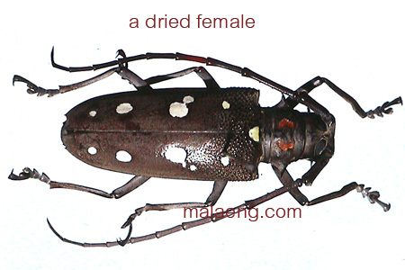

PESTS OF MORINGA :: MAJOR PESTS :: LONG HORN BEETLES
6. Long horn beetles: Batocera rubus (Cerambycidae: Coleoptera)
Distribution and status
It is widely distributed all over the Indian sub-continent.
Damage symptoms : Grubs make zig-zag burrow beneath the bark, feed on internal tissues, reach sapwood and cause death of affected branch or stem. Adults feed on the bark of young twigs and petioles
|  |
Batocera rubus |
Bionomics : Eggs are laid singly in cracks or crevices in the bark of the tree. Grubs are stout, about 100 mm long, yellowish in colour with well-defined segmentation. Pupation takes place within the tunnels. Adults are medium-sized beetles and yellowish–brown with white spots on elytra. Egg, grub and pupal periods last for 1 to 2, 24 to 28 and 12 to 24 weeks respectively. There is only one generation in a year.
Management :
- Clean affected portion of tree by removing all webbed material, excreta etc.
- Insert in each hole, cotton–wool soaked in monocrotophos 36 WSC 5 ml or any good fumigant like carbon disulphide, carbon tetrachloride, chloroform or even petrol and seal treated hole with mud.